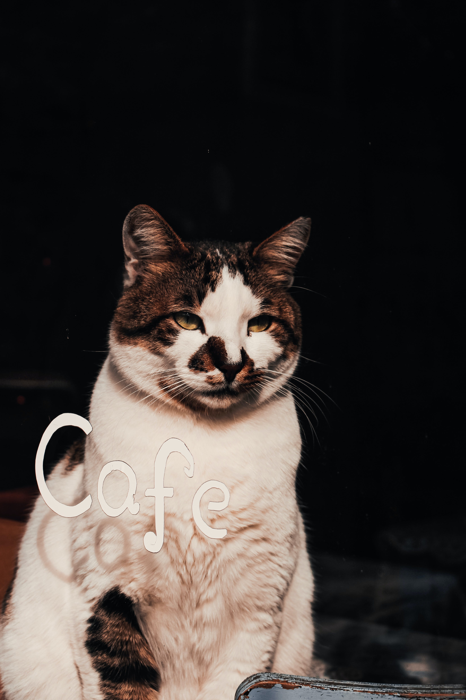
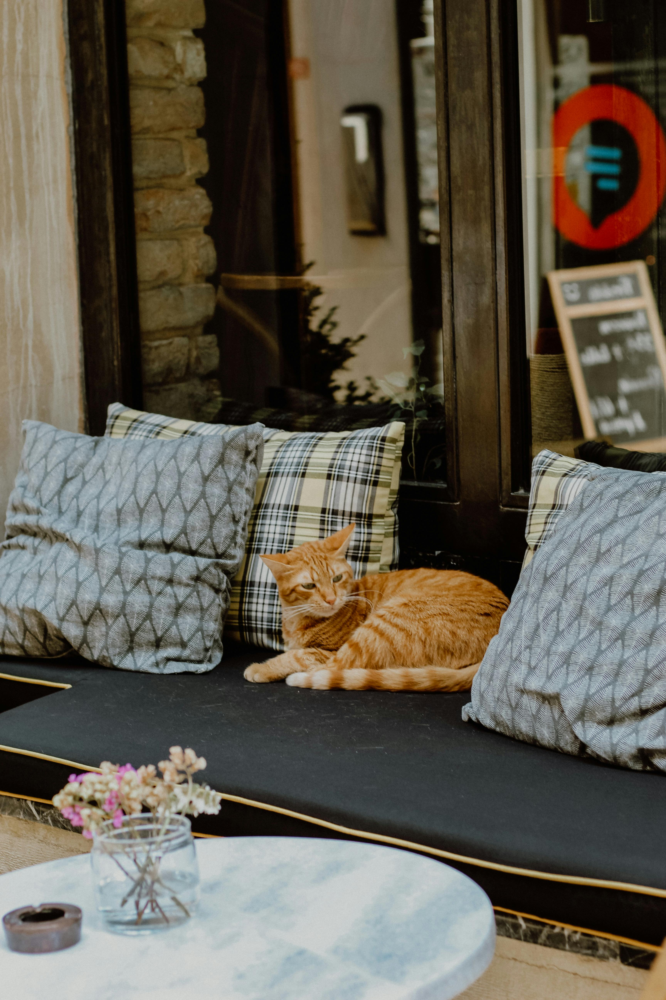
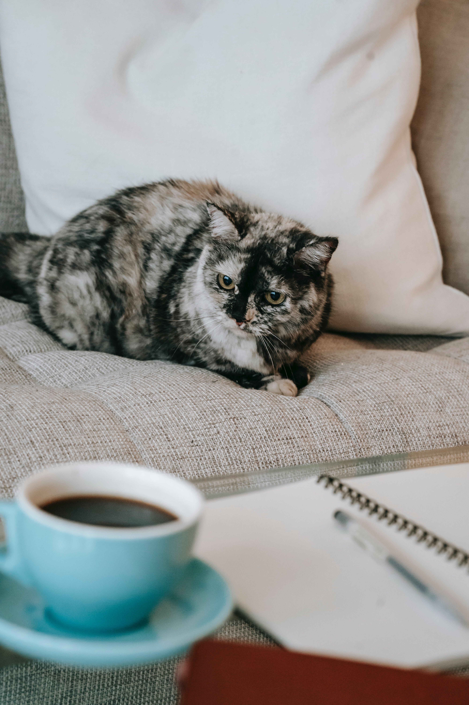
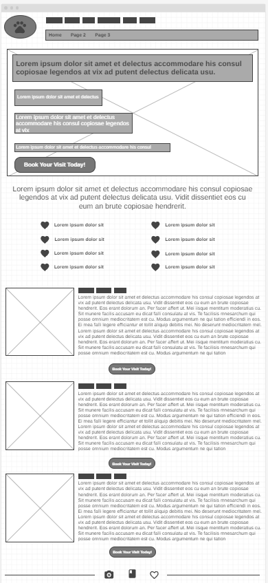

Overview
Purpose
Come and relax with our cute cats of all ages.
Our cat café is for everyone!
Want to play with a cat?
Want a place to relax
Want somewhere nice and quiet to be productive?
Want to do all the above with a refreshing beverage?
Then the "Purrfect Study Café" is the right place for you!
Everyone is welcomed as long as they are at least 5 years of age!
Sign the waiver today and plan a date to come visit!
The best part is that it's affordable and everyone will enjoy it!
Prices:
Children (17 and under): $5
Adults (18+): $15
Seniors (65+): $10
Branding
Website Logo
The Purrfect Study Café
The primary demographic that this site aims to capture is a diverse range of individuals,
spanning from college students to adults, all in search of a serene and conducive space to
accomplish their work. The unique selling proposition of this platform is its fusion of
productivity and relaxation by tapping into the widespread popularity of cat cafes. This
innovative concept presents a 2-in-1 solution, serving as both a functional workspace and a
therapeutic haven for individuals looking to unwind amidst the company of friendly felines.
The anticipation of high demand necessitates the implementation of a reservation system to
ensure that visitors have dedicated time for meaningful interactions with the resident cats.
To cater to the diverse needs of its audience, the site outlines a spectrum of activities that
visitors can engage in. These include making reservations for both work and play—whether it be
securing time to study with cats, reserving a private study room with cat companionship, or
understanding the step-by-step process of cat adoption. Each activity is thoughtfully designed
to enhance the overall experience, aligning with the overarching theme of the site as a harmonious
blend of productivity and relaxation.
Moreover, the site introduces a reward system to further incentivize visitors. Opportunities to
earn a free drink or a complimentary session to relax with the cats are presented through raffles
and fundraisers, adding an element of excitement and community engagement. This not only
differentiates the site from competitors but also establishes a sense of goodwill, encouraging
repeat visits and customer loyalty.
Additionally, the inclusion of a treat-selling feature enhances the interactive nature of the
cat cafe. Customers who spend a certain amount are rewarded with the opportunity to select a
treat for the cats, fostering a sense of participation and connection with the resident feline
community. This initiative not only contributes to the well-being of the cats but also adds a
layer of enjoyment for visitors, creating a memorable and fulfilling experience.
This cat cafe website stands out as a versatile and thoughtful platform catering to the needs
of its target audience. By seamlessly integrating work and relaxation, offering a transparent
and informative interface, and incorporating engaging features like rewards and treat options,
the site aims to create a unique and memorable experience for its visitors. Through these
innovative approaches, the cat cafe transcends the conventional boundaries of a workspace or
a pet adoption platform, presenting itself as a holistic destination for individuals seeking
a harmonious blend of productivity and leisure.

The Study Café
What sets this site apart from other alternatives is its meticulous attention to creating a
unique and inviting atmosphere. Recognizing the common challenges faced by college students
and working adults, the site positions itself as a refuge from the stresses of conventional
study or work environments. The cat cafe offers a tranquil setting where individuals can
enjoy not only the company of cats but also partake in the simple pleasures of eating and
drinking, thus creating a holistic experience.
There are three setting options for studying at our cafe. First, we have our lounge, which
can be used to socialize with others, or a place to have a cup of tea while enjoying the
view of our adorable cat residents through the window. For an additional fee, you can rent
out a room for 1- 4 hours. One of the two rooms we will offer is known as the “Quiet room,”
it is a room where 1-3 individuals can be in at the same time to study. Cats may come and go
as they please, or if you’d rather not interact with them, we can comply with that. The other
room is known as the “Bigger Room,” this room is for group studies or activities. Just as in
the Quiet room, you have the choice to have cats come and go, or not have them be in the room
at all.
Images for The Study Café

The Cat Café
In order to provide a comprehensive and user-friendly experience, the website aims to
address various questions that potential visitors might have. These inquiries range
from basic logistical information such as the cafe's availability to more specific
details like the process of reserving a day to play with the cats or adopting one if
desired. The transparency and accessibility of this information contribute to the
overall appeal of the site, fostering trust and a sense of convenience for the users.
Images for The Cat Café
 Wireframes
Home
[Page 2]